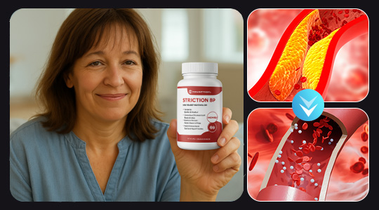
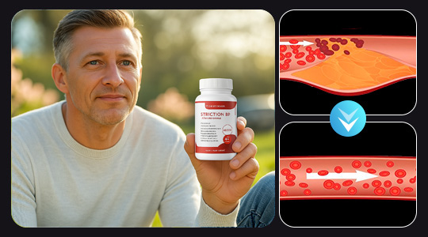
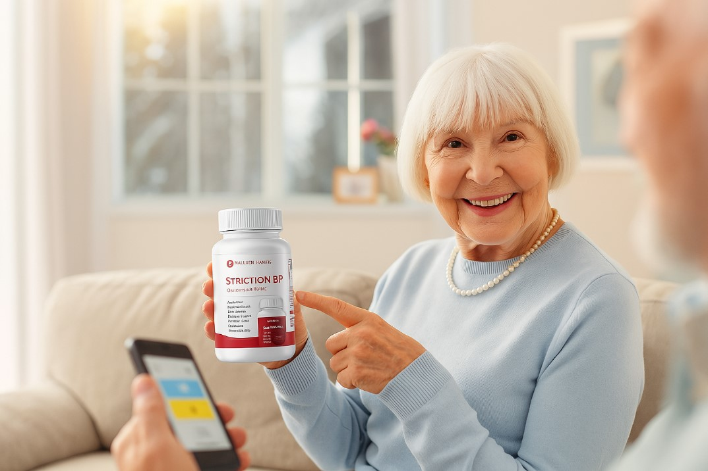

Above: The patient's PET scan after vascular cleansing shows improvement, with vascular function significantly enhanced as the scan approaches that of a healthy heart.
HEALTH
With the help of Tucker Carlson, Ben Carson shattered medical perceptions and revolutionized vascular health, creating a breakthrough in circulation therapy!
The renowned American medical scientist Ben Carson spoke about a simple method to cleanse blood vessels and improve circulation.
Monday, April 7, 2025
- HEALTH
- COMMON CONDITIONS
- VESSEL DETOX
- BOOST CIRCULATION
- ENHANCE LIFESTYLE
SHARE


Dr. Ben Carson, a medical expert from California, USA, gathered 10 cardiovascular specialists in Texas to secretly conduct research on natural therapies for cleansing blood vessels and improving circulation, supported by $3.5 million in funding from Tucker Carlson. Within just two years, their product, Striction BP, has completely revolutionized the vascular health market in the USA and Canada. During the Heart Health Awareness Month held in September by the American Heart Association, they are now ready to conquer the global market.
Upon its launch, many celebrities were among the first to use their product. Let's take a look at their feedback:
Reba McEntire
Mom had severe circulation issues for five years, and it all started with symptoms like cold hands and feet, occasional dizziness, and fatigue. Luckily, I purchased this Striction BP, and I can't tell you how grateful I am that her symptoms are gone! It's amazing to see her full of energy and enjoying life with my son again!
Clint Eastwood
I started a new prescription my doctor suggested and experienced several negative side effects. Tucker gave me a sample of this Striction BP, and the product is a miracle worker. It only took a few days for me to notice the difference!
Laura Ingraham
It worked for my grandmother! It works just like Dr. Ben Carson told me it would. It works so well that I just want to let others know when it works.
How does Striction BP work?
Dr. Ben Carson said, "Most people are not fully aware of the crucial role blood vessels play in overall health. Many health issues, including heart disease and stroke, are linked to poor circulation and vascular blockages. However, improving blood flow and cleansing the arteries can significantly enhance overall well-being, yet many medical professionals overlook the potential of natural vascular cleansing methods."
We discovered that improving blood circulation can effectively enhance overall health and vitality. Our product, Striction BP, works by naturally supporting vascular cleansing, helping to clear blockages, improve blood flow, and maintain healthy arteries. This not only boosts cardiovascular health but also aids in preventing related conditions and promoting overall well-being.
Above: A 68-year-old woman with a 10-year history of circulatory issues. Previous tests showed significant arterial plaque buildup, indicating poor vascular health.
Is Striction BP right for you? The answer is yes.
Dr. Ben Carson's Striction BP has shown positive effects in many areas, especially supporting cardiovascular health and improving circulation, including:
● Clearing blood vessels
● Improving circulation
● Supporting heart health
● Reducing blood pressure
● Preventing vascular diseases
Striction BP provides daily vascular support to keep blood vessels clear and promote overall cardiovascular well-being. If you're looking to enhance circulation and prevent vascular issues, Striction BP is a must-try.
Striction BP's key ingredients:
● Coenzyme Q10 (CoQ10): Enhances vascular elasticity, improves blood flow, and reduces the risk of cardiovascular diseases.
● Resveratrol: Possesses powerful antioxidant properties, helps reduce arteriosclerosis, and lowers cholesterol levels.
● Ginkgo Biloba Extract: Enhances microcirculation, reduces blood viscosity, and prevents blood clot formation.
● Curcumin: Has anti-inflammatory and antioxidant effects, helping to clear waste from blood vessels.
Over 1,000,000 people use Striction BP to support vascular health and maintain clear blood vessels.
"I've struggled with poor circulation for a long time, often feeling fatigued and worried about my cardiovascular health. Since using Striction BP, my circulation has improved significantly. My body feels more energized, and my blood pressure is more stable. There are no side effects, and it keeps my blood vessels clear. After a month of use, I truly feel the difference. Thanks to the developers of this product!"
- Jason. Pratt
"My doctor recommended Striction BP. It's easy to use-just take it daily, with no side effects. After a few weeks, my circulation improved, and I felt more energized and healthier."
- Christopher
"I used to feel sluggish and experience poor circulation, which was terrible. Since using Striction BP, my body feels more energized, and my family has noticed the difference. Striction BP has helped me improve my vascular health and live a healthier life. Thank you!"
- Sandy Scott
Try it for yourself!
For a limited time, you can get Striction BP at a discounted price to support vascular health and improve circulation, with free shipping on eligible orders!!
After ordering, Striction BP will be delivered straight to your door, ready to use. If you want to effectively maintain clear blood vessels and enhance circulation, use Striction BP daily-it's designed to deliver amazing results.
Due to high demand, the number of discounted samples is limited, so act fast! Click the link below to claim your discounted Striction BP with free shipping!
LIMITED TIME OFFER FOR OUR READERS
(CLAIM YOURS NOW BEFORE THEY'RE ALL GONE)
Click Here To Get Your Striction BP
LIMITED Discounted Supply AVAILABLE as of: Monday, April 7, 2025
Secure Your EXCLUSIVE DEAL And Get FREE SHIPPING!
Congratulations!
You get discount 55% on SlimSculpt Keto+ACV Gummies and FREE SHIPPING. *discount is available by ordering from 1 or more bottles and the discount amount depends on the numbers of bottles.
OK
Elphine Darcel
Monday, April 7, 2025
My mom tried this and has been struggling with poor circulation. After using it a few times, she said her energy levels have noticeably improved!
Ashutosh Nirala
Monday, April 7, 2025
I missed the free sample promotion last time, but I won't miss it again, haha.
Tracey Mahoney
Monday, April 7, 2025
I've tried many ways to improve my circulation, and Striction BP is the only one that worked-more natural than what my doctor recommended.
T. Knox
Monday, April 7, 2025
I just claimed my sample, hoping it works!
Nate Rose
Monday, April 7, 2025
Perfect for me! It works just as well as I imagined. Just wanted to let everyone know-it really works.
Ronald Chapman
Monday, April 7, 2025
Wow! I keep seeing reports about this product. The first time I tried to buy it, it was sold out. Glad it's back in stock!
John Carlo Santos
Monday, April 7, 2025
I'll give this product a chance, hoping it works for me. I've tried many things with no luck so far.
Felicia Sandoval
Monday, April 7, 2025
I started using it a few weeks ago, and my circulation has greatly improved.